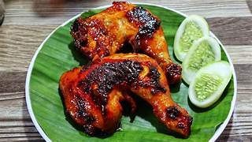

Resep Ayam Bakar

Bahan-Bahan :
- 1 ekor ayam. dipotong menjadi 4 bagian
- 6 siung bawang putih
- 5 siung bawang merah
- 3 butir kemiri
- 6 sdm kecap manis
- 1 sdm gula merah
- 1 sdt garam
- 1 sdt ketumbar
- 200 ml santan
Cara Membuat :
- Haluskan bawang putih, bawang merah, kemiri, dan ketumbar
- Tumis bumbu halus hingga harum
- Masukkan ayam, aduk rata dengan bumbu
- Tambahkan santan, gula merah, garam dan kecap manis
- Masak hingga ayam empuk dan bumbu meresap
- Panggang ayam di atas bara api hingga kecoklatan
- Sajikan hangat dengan sambal dan lalapan